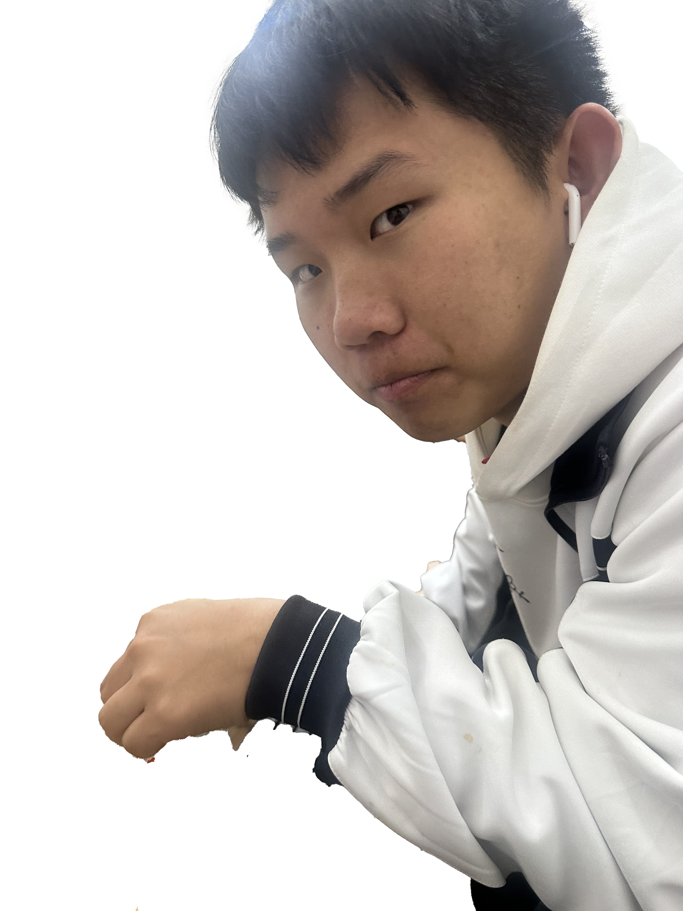

刘坤，小名叫狗蛋，是河北廊坊刘家村的人。他爹刘彦钊以前当过刘家村的村长，所以刘坤也算是村长家的儿子。后来爷俩跑去云南闯荡，一路折腾最后在澜沧上允镇扎下了根，这段父子创业的经历在当地很出名。
经过多年打拼，刘坤一家在上允镇几乎说一不二，家底厚得数不清。其中最有名的产业就是「济东摩配有限公司」，光这一家摩托车配件公司就垄断了上允镇几乎全部资金链，连镇长李亚保见了他都得客客气气。刘坤被定为董事长的唯一接班人后，开始飘了，仗着家里钱多、马上要当董事长，狂妄得不行——大家叫他“刘董”。他自认为年轻有为，在上允称霸。骑电动车从不看路，还放狠话：“上允就是我家地盘，我想咋走就咋走！！”
